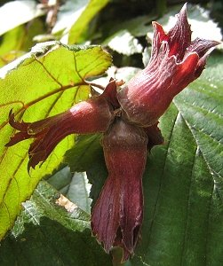
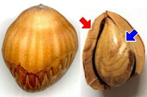

|
| Die Früchte werden im September reif.
Die Frucht ist von einer Hülle aus grünen oder rötlichen Blättern umgeben.
 |  Die Frucht der Haselnuss ist eine echte Nuss: Ihre ganze Fruchtschale ist hart.
Der helle Same in der holzigen Schale ist essbar.
Die Früchte werden von Eichhörnchen und anderen kleinen Tieren verbreitet.
|